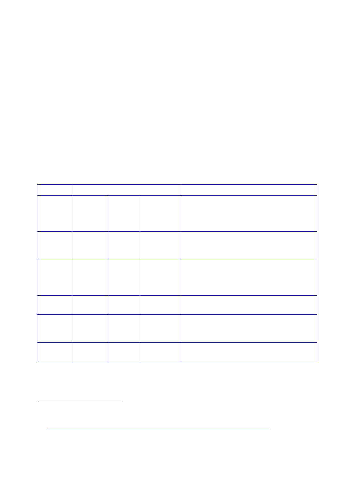

12.1 |
Security Sector Reform
•
how a
‘police officer’ was defined – some definitions included retired
officers and
MOD police
officers, others did not; and
•
the way in
which numbers were counted – some counted the posts in
place
regardless
of whether an officer occupied it at the time, others did
not.
1544.
Table 6
contains a broad estimate of the number of UK police officers
deployed to
Iraq
between 2003 and 2009. Because of the limitations of the source
material and the
variety of
sources used, the numbers quoted are approximate and, in some
cases, are
inconsistent
with other material. The explanatory notes provide the reader with
helpful
background
information on how the numbers have been calculated. In some cases,
the
Inquiry has
made assumptions in the figures about the continuation of posts
based on
preceding
or subsequent evidence.
14071408140914101411
Period
Estimated
total
Notes
Iraq Iraq
and Including
Jordan
known
ArmorGroup
posts
July
2003
DCC Brand
in Baghdad and DCC White in Basra.
DCC White
was accompanied by two MOD
police
officers.
October
2003
6 MOD
police officers were deployed to Baghdad
for various
roles including helping to establish
the Joint
Co‑ordination Cell and supporting the
Baghdad
Police Academy.
November
2003
10
Including
36 police officers who were deployed to
Jordan to
conduct police training.
December
2003
70
Including
24 police officers who were deployed
to
az‑Zubayr Academy in Basra to conduct police
training.
January
2004
An
additional 36 officers were deployed to
Jordan.
1407
Statement
Brand, 29 June 2010, page 1; Statement White, 30 June 2010, page
1.
1408
Letter Lee
to Clarke, 18 February 2004, ‘Deployment of MDP Officers to
Iraq’.
1409
Letter Owen
to Rycroft, 18 December 2003, ‘UK Contribution to Iraqi Police
Training’.
1410
Report ISSU
[FCO], 2 March 2004, ‘Security Sector Reform – UK Contribution’;
Statement White,
30 June
2010, page 36.
1411 Annotated
Agenda, 1 March 2004, Ad Hoc Group on Iraq Rehabilitation meeting;
Report ISSU [FCO],
2 March
2004, ‘Security Sector Reform – UK Contribution’.
409